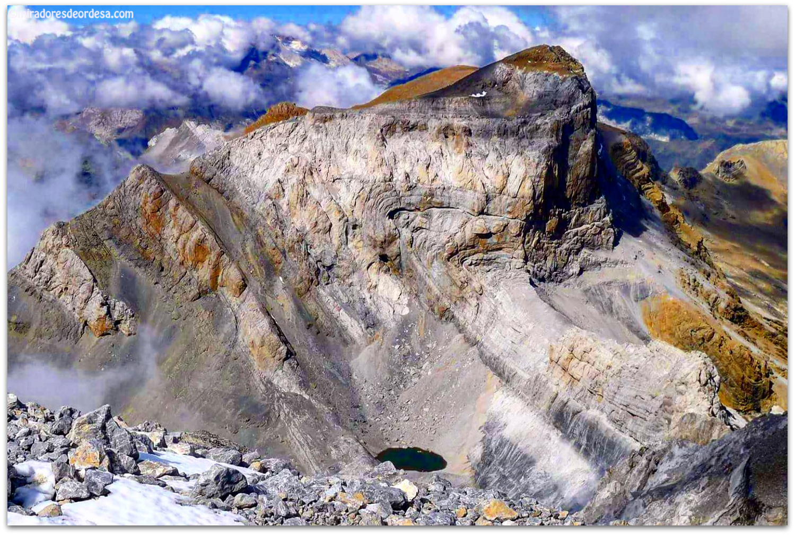
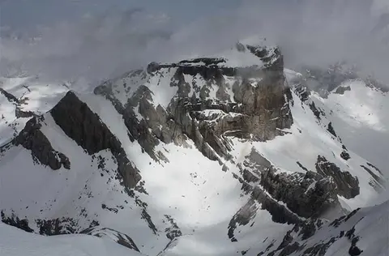

| INICIO | Cilindro de Marboré | Pico de Marboré | Monte Perdido | Pico Añisclo | Taillón |
|   |
Fue llamado Cilindro (Cylindre) por su fisonomía geométrica, siendo la cima más elevada de la cadena llamada tradicionalmente Marborés (Marmorés), relacionada con la palabra mármol, si bien no se corresponde con la litología del macizo. Hay que indicar que la palabra Marmolera aparece en la toponimia de los pirineos para designar ciertas betas calcáreas que forman inclusiones de cierta extensión dentro de las masas metamórficas, como en los Picos del Infiernos o en Montferrat (Vignemale). La denominación parece tener origen en la obra de Ramond de Carbonieres, pues en ella se cita de forma explícita (1789), señalando su posición con respecto a Marboré y su altitud "Le sommet cylindrique, placé plus à s'est ...1710". La altitud de 1.710 toesas se corresponden con 3.332 metros, prácticamente clavando el dato altimétrico que proporcionan las medidas actuales. Además cita el Monte Perdido con una altitud superior (1763 toesas = 3.436 metros), quince años antes de su conquista por este autor y sus colaboradores (guías). El nombre que se ofrece como oficial es Mallo de Marmorés o Mallo de Marborés. Como se ha indicado Marmorés si se señala como el nombre tradicional con que se ha conocido la cadena montañosa. La palabra Mallo es, en cualquier caso, más idónea para la designación de hitos orográficos. |
||||